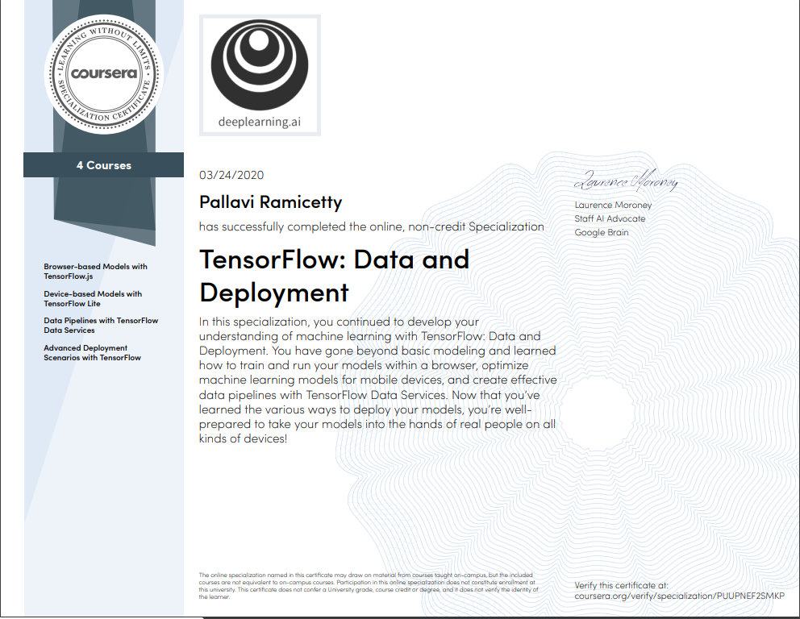

Tensorflow: Data and Deployment Specialization at Coursera
Maybe we have trained a model in Jupyter Notebook or in our system, but how do we take that model and have it be running 24⁄7, have it serve actual user queries, and create value? This course will teach us how to do all that using TensorFlow.
We will be taking a look at training/inference models at the browser using javascript and even be able to run them on our phone by optimizing models using TensorFlow Lite. Also, we will be taking a look at data pipelines on ETL (Extract, Transform and Load) since data is variety (Categorical, Numerical and some time embedding required) and volume (ML models demand large datasets). Advanced and very important concept (Federated Learning) for training models with the user’s private data (only knowledge out of data from the user’s device - client) without compromising the privacy of the user’s data. Centralized servers can’t reverse engineering to find an individual (client) private data.
1 - Browser-based Models with TensorFlow.js
One of the existing things about JS is that it allows us to do neural network training and inference right
there in the web browser. So, it’s really cool that a user can upload a picture to a web browser or grab an
image from a webcam and then have a neural network do training or inference right in the web browser
without needing to send that image up to the cloud to be processed by a server.
For more info kindly go through this blog
2 - Device-based Models with TensorFlow Lite
We’ve seen a lot of deep building algorithms run maybe on our system and on the Cloud, but there’s
something magical to getting these algorithms. Maybe a model that we’ve trained to run in your hand, on
our smartphone or on a lightweight embedded processor like, an Arduino Raspberry Pi. TensorFlow Lite, an
exciting technology that allows us to put our models directly and literally into people’s hands.
For more info kindly go through this blog
3 - Data Pipelines with TensorFlow Data Services
Data powers all of our machine learning models. TensorFlow Data Services makes managing data much easier. As developers, one of the things that we’ve discovered when we are building models is that we often have to write far more lines of code to get our data and to slice our data and to manage our data to be able to feed it for training, then we write code for the actual training itself. Here, we’ll learn about how to quickly load and use existing datasets, how to input datasets from outside into the TFRecord format, and how to build efficient data pipelines and optimizations. Finally, we’ll learn how to polish and maybe share our own datasets with others using this framework.
For more info kindly go through this blog
4 - Federated Learning
Very important concept for training models with private data without uploading the user’s private data into the cloud.
For more info kindly go through this blog
My Certification
